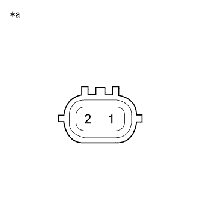

DTC P0010/39 VVT OCV系統 |

| DTC No. SAE/TCCS | DTC検出条件
| 点検部位 |
|---|---|---|
| P0010/39 |
|
|
| 手順1 | TaSCANアクティブテスト実施（VVT制御） |
SST(TaSCAN)をDLC3に接続する。
エンジン停止状態で、IG ONにする。
SST(TaSCAN)の画面表示に従い、[アクティブテスト]-[VVT制御]を選択する。
エンジンアイドル回転状態にして、[実施/未実施]を実行する。
| アクティブテスト(オイルコントロールバルブの状態) | エンジンの状態 |
|---|---|
| 未実施(作動しない) | 通常のアイドル回転数 |
| 実施(作動する) | エンスト、ラフアイドルになる |
| 結果 | 飛び先 |
|---|---|
| 異常 | A |
| 正常 | B |
|
| ||||
| A | |
| 手順2 | カムシャフトタイミングオイルコントロール バルブASSY単体点検 |
|  |
カムシャフトタイミングオイル コントロールバルブASSYを取りはずす。
SST(トヨタエレクトリカルテスター)を使用して、端子間の抵抗を測定する。
| 点検端子 | 点検条件 | 基準値 |
|---|---|---|
| 1 - 2 | 約20°C | 6.9 to 7.9Ω |
| *a | コネクター非接続状態 (カムシャフトタイミングオイル コントロールバルブASSY) |
|
| ||||
| OK | |
| 手順3 | ワイヤハーネスおよびコネクター点検（エンジコントロールコンピュータ - カムシャフトタイミングオイルコントロールバルブASSY） |
参照。エンジンコントロールコンピュータのコネクターB36を切り離す。
カムシャフトタイミングオイルコントロールバルブASSYのコネクターB14を切り離す。
SST(トヨタエレクトリカルテスター)を使用して、端子間の抵抗を測定する。(端子配列は参照)
| 点検端子 | 点検条件 | 基準値 |
|---|---|---|
| B36-15 (OC1+) - B14-2 | 常時 | 1Ω未満 |
| B36-14 (OC1-) - B14-1 | 常時 | 1Ω未満 |
| 点検端子 | 点検条件 | 基準値 |
|---|---|---|
| B36-15 (OC1+)およびB14-2 - 他の端子間およびボデーアース間 | 常時 | 10ｋΩ以上 |
| B36-14 (OC1-)およびB14-1 - 他の端子間およびボデーアース間 | 常時 | 10ｋΩ以上 |
|
| ||||
| OK | ||
| ||